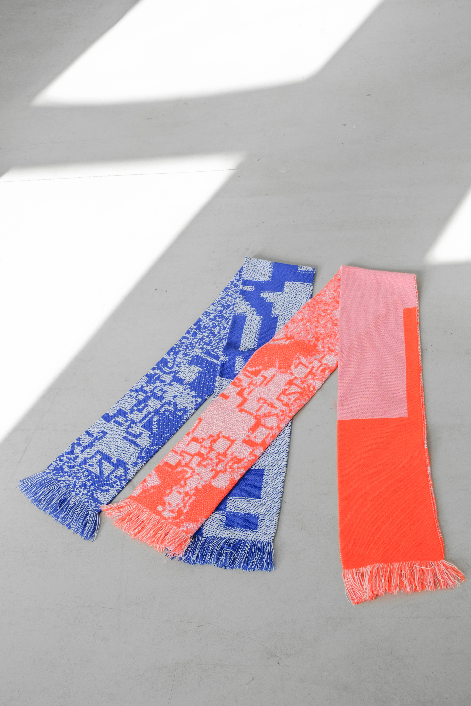
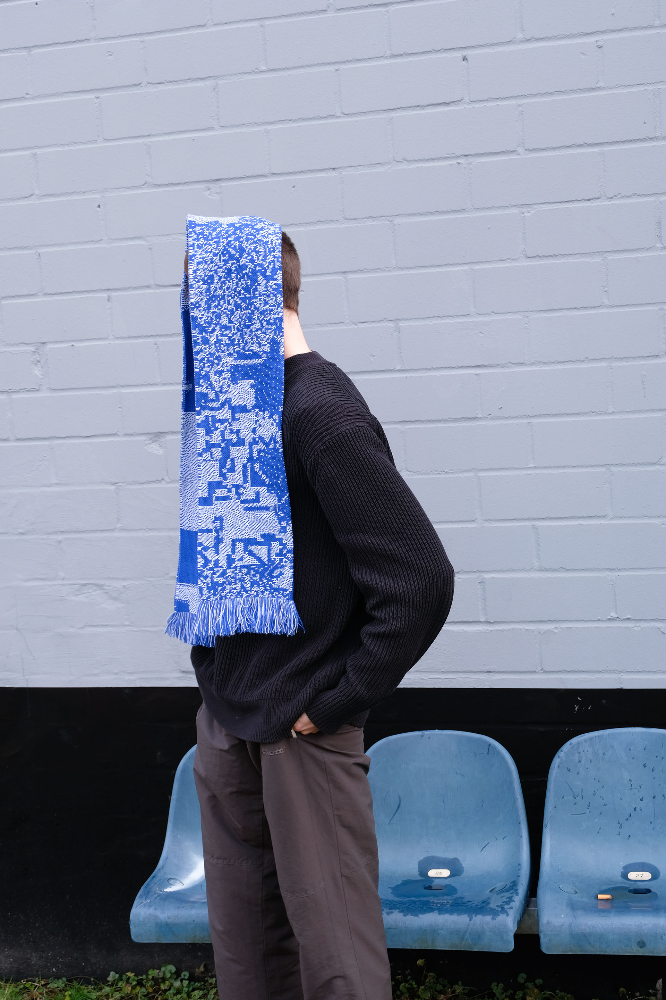
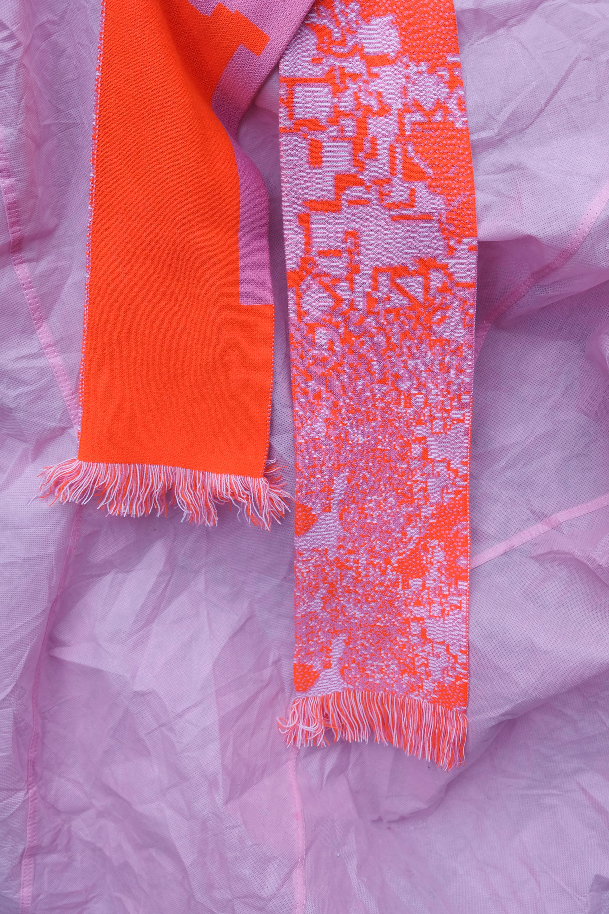

Die Schals bilden den Versuch, Pixel eines digitalen Patterns in die Maschen eines Jacquardmuster zu übersetzen. Ein Pixel = eine Masche. Die Farben wer- den auf der Grundlage der „Glitch“-Kombination aus- gewählt. Jacquard ist eine spezielle Webart für Stoffe, die die Schaffung komplexer Muster ermöglicht.


